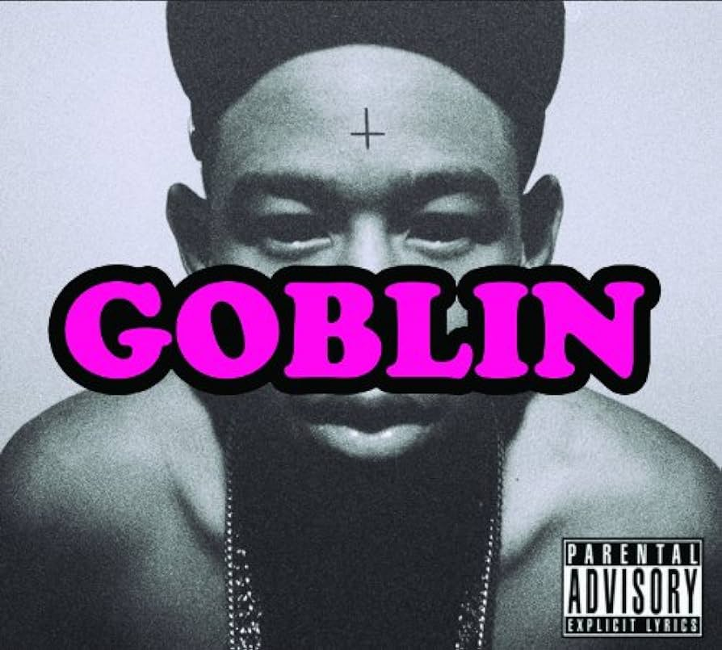

Bastard
- Bastard
- Seven
- Odd Toddlers (feat. Casey Veggies)
- French!
- Blow
- Pigs Fly (feat. Domo Genesis)
- Parade
- Slow It Down (feat. Hodgy Beats)
- AssMilk (feat. Earl Sweatshirt)
- VCR / Wheels
- Session (feat. Hodgy Beats & Mike G)
- Sarah
- Jack and the Beanstalk
- Tina (feat. Jasper Dolphin & Taco)
- Inglorious
El álbum "Bastard" sirve como un portal a la mente inquieta y creativa de un joven Tyler, The Creator. Desde su lanzamiento en 2009, este proyecto no solo estableció a Tyler como un talentoso rapero y productor, sino que también presentó una narrativa cruda y provocativa que lo diferenciaba en la escena musical.
El álbum comienza con "Bastard", una pista introductoria que establece el tono para el resto del proyecto. Aquí, Tyler se sumerge en sus problemas personales, explorando su relación con su padre ausente y abordando sentimientos de angustia y aislamiento.
A lo largo de las 13 pistas que componen el álbum, Tyler se sumerge en temas oscuros y controvertidos. "Seven" presenta una confesión de sus pensamientos más íntimos y sus luchas internas, mientras que "Odd Toddlers" muestra su habilidad para alternar entre letras jocosas y reflexivas.
En "French!", Tyler ofrece una mirada audaz y desenfadada sobre su descontento con la fama incipiente y las dinámicas sociales. "Blow" y "Pigs Fly" son canciones que resuenan con su frustración y resentimiento hacia la sociedad, mientras que "Session" revela una vulnerabilidad cruda a través de su narrativa introspectiva.
El álbum culmina con "Inglorious", una pista que muestra su habilidad para reflexionar sobre su camino hasta el momento presente, marcando un cierre introspectivo para este proyecto inicial.
Goblin

- Bastard
- Seven
- Odd Toddlers (feat. Casey Veggies)
- French!
- Blow
- Pigs Fly (feat. Domo Genesis)
- Parade
- Slow It Down (feat. Hodgy Beats)
- AssMilk (feat. Earl Sweatshirt)
- VCR / Wheels
- Session (feat. Hodgy Beats & Mike G)
- Sarah
- Jack and the Beanstalk
- Tina (feat. Jasper Dolphin & Taco)
- Inglorious
- Goblin
- Yonkers
"Goblin", el segundo álbum de estudio de Tyler, The Creator, lanzado en 2011, marca una continuación audaz y provocativa de la narrativa introspectiva y cruda que caracteriza su estilo. Este álbum no solo consolidó su presencia en la escena del hip hop, sino que también profundizó en los temas oscuros y polémicos que marcaron su identidad artística.
El álbum comienza con "Goblin", una pista que revela un diálogo interno entre Tyler y su alter ego, Wolf Haley, sumergiéndose en sus pensamientos más profundos y complejos. Este tema establece el tono para el álbum, mostrando la dualidad de su personalidad y el conflicto entre sus demonios internos y su deseo de éxito.
Canciones como "Yonkers" capturaron la atención del público y la crítica, con su producción inquietante y letras impactantes que desafiaban las convenciones sociales y exploraban temas de violencia y autoimagen.
En "She", Tyler presenta una narrativa sobre una relación obsesiva y autodestructiva, mientras que "Nightmare" y "Tron Cat" son pistas que revelan su oscuro sentido del humor y su habilidad para crear imágenes gráficas con sus letras.
La naturaleza provocativa de "Goblin" lo lleva a explorar temas que desafían las normas sociales y culturales, utilizando letras explícitas y perturbadoras para transmitir un mensaje crudo sobre la alienación, la ira y la búsqueda de identidad en la juventud contemporánea.
El álbum recibió reacciones mixtas, pero su impacto en la música hip hop fue innegable, mostrando la singularidad de Tyler, The Creator como un artista que desafía límites y rompe paradigmas.
WOLF
- Wolf
- Jamba (feat. Hodgy Beats)
- Cowboy
- Awkward
- Domo23
- Answer
- Slater (feat. Frank Ocean)
- 48
- Colossus
- PartyIsntOver / Campfire / Bimmer (feat. Laetitia Sadier & Frank Ocean)
- IFHY (feat. Pharrell Williams)
- Pigs
- Parking Lot (feat. Casey Veggies & Mike G)
- Rusty (feat. Domo Genesis & Earl Sweatshirt)
- Trashwang (feat. Na'kel, Jasper Dolphin, Lucas, L-Boy, Taco, Left Brain & Lee Spielman)
- Treehome95 (feat. Coco O. & Erykah Badu)
- Tamale
- Lone
"Wolf", lanzado en 2013, representa un punto de inflexión en la carrera de Tyler, The Creator. Este álbum no solo marca una progresión en su madurez artística, sino que también revela una narrativa más elaborada y una exploración más profunda de sus emociones y experiencias.
El álbum comienza con "Wolf", una introducción instrumental que establece un ambiente misterioso y reflexivo, dando paso a pistas como "Jamba" y "Cowboy", que destacan por su producción enérgica y letras que reflejan la autoconfianza y el crecimiento personal.
En "Answer", Tyler se sumerge en temas personales, explorando su relación con su padre y sus luchas internas. "Slater" y "48" ofrecen una mirada a la dinámica de sus relaciones y amistades, mientras que "Colossus" y "IFHY" presentan una narrativa sobre el amor y la complejidad de las emociones humanas.
El álbum culmina con "Lone", una pista reflexiva que cierra el viaje emocional y narrativo que es "Wolf". La madurez en la producción y las letras muestra una evolución notable en el arte de Tyler, estableciéndolo como un artista más profundo y reflexivo.
"Wolf" fue aclamado por la crítica por su complejidad y su capacidad para abordar temas personales con una narrativa más cohesiva. Este álbum consolidó aún más la posición de Tyler, The Creator como un artista en constante evolución y reafirmó su capacidad para trascender los límites de la música hip hop.
Flower Boy

- Foreword
- Where This Flower Blooms (feat. Frank Ocean)
- Sometimes...
- See You Again (feat. Kali Uchis)
- Who Dat Boy (feat. A$AP Rocky)
- Pothole (feat. Jaden Smith)
- Garden Shed (feat. Estelle)
- Boredom (feat. Rex Orange County & Anna of the North)
- I Ain't Got Time!
- 911 / Mr. Lonely (feat. Frank Ocean & Steve Lacy)
- Droppin' Seeds (feat. Lil Wayne)
- November
- Glitter
- Enjoy Right Now, Today
"Flower Boy", lanzado en 2017, marca un cambio significativo en la narrativa y el estilo musical de Tyler, The Creator. Este álbum es una exploración profunda de su yo interior, revelando vulnerabilidad, reflexión y crecimiento personal.
El álbum comienza con "Foreword", estableciendo un tono introspectivo que permea todo el proyecto. "Where This Flower Blooms" y "Sometimes..." son pistas que reflejan una sensibilidad más suave y melódica, mostrando la evolución en su sonido y narrativa.
"See You Again" y "Boredom" presentan un contraste entre la búsqueda de la conexión emocional y el sentimiento de aislamiento, mientras que "911 / Mr. Lonely" muestra una dualidad entre la fama y la soledad, explorando la complejidad de la vida bajo los reflectores.
En "November", Tyler reflexiona sobre su pasado y el tiempo, ofreciendo una visión retrospectiva y una exploración de sus experiencias. "Glitter" y "Enjoy Right Now, Today" cierran el álbum con una sensación de aceptación y paz, mostrando un crecimiento emocional y una perspectiva más positiva.
"Flower Boy" recibió elogios de la crítica por su producción sofisticada, letras emotivas y la madurez en la narrativa de Tyler. Este álbum marcó una evolución importante en su música y fue considerado un punto culminante en su carrera, mostrando una profundidad artística y una vulnerabilidad que resonó con sus seguidores.
IGOR
- IGOR'S THEME
- EARFQUAKE
- I THINK
- EXACTLY WHAT YOU RUN FROM YOU END UP CHASING
- RUNNING OUT OF TIME
- NEW MAGIC WAND
- A BOY IS A GUN*
- PUPPET
- WHAT'S GOOD
- GONE, GONE / THANK YOU
- I DON'T LOVE YOU ANYMORE
- ARE WE STILL FRIENDS?
"IGOR", lanzado en 2019, representa una ruptura audaz con las convenciones musicales establecidas por Tyler, The Creator. Este álbum es una exploración innovadora y emocional de temas como el amor no correspondido y el autodescubrimiento, presentado a través de una narrativa sonora única.
El álbum comienza con "IGOR'S THEME", una introducción que establece el tono para el viaje emocional que se avecina. A lo largo de las pistas, como "EARFQUAKE" y "I THINK", Tyler nos lleva a través de un laberinto de emociones, revelando la complejidad del amor y la identidad.
En "A BOY IS A GUN*" y "PUPPET", Tyler explora la dinámica emocional de estar enamorado y sentirse atrapado en una relación. Estas canciones muestran una vulnerabilidad sin precedentes, profundizando en los altibajos emocionales de un amor no correspondido.
En "GONE, GONE / THANK YOU", Tyler ofrece una reflexión madura sobre la aceptación y el agradecimiento por las experiencias pasadas, mientras que "ARE WE STILL FRIENDS?" cierra el álbum con una nota de incertidumbre y reflexión sobre el futuro. El final del album es casi identica al comienzo por lo que da a enteder que el personaje pasa por un ciclo constante.
"IGOR" recibió aclamación por su originalidad, producción innovadora y la manera en que Tyler transmitió una historia emocional a través de la experimentación sonora. El álbum mostró una evolución artística significativa en la narrativa y la composición de Tyler, consolidándolo como un innovador en el panorama musical actual.
Call me if you get lost
- SIR BAUDELAIRE
- CORSO
- LEMONHEAD (feat. 42 Dugg)
- WUSYANAME (feat. Ty Dolla $ign & YoungBoy Never Broke Again)
- LUMBERJACK
- HOT WIND BLOWS (feat. Lil Wayne)
- MASSA
- RUNITUP (feat. Teezo Touchdown)
- MANIFESTO (feat. Domo Genesis)
- SWEET / I THOUGHT YOU WANTED TO DANCE (feat. Brent Faiyaz & Fana Hues)
- MOMMA TALK
- RISE! (feat. DAISY WORLD)
- BLESSED
- JUGGERNAUT (feat. Lil Uzi Vert & Pharrell Williams)
- WILSHIRE
- SAFARI
"Call Me If You Get Lost" marca una evolución continua en la narrativa y el sonido de Tyler, The Creator. Lanzado en 2021, este álbum presenta una exploración madura y versátil de su arte, fusionando elementos de rap clásico con una paleta sonora contemporánea y rica en matices.
El álbum comienza con "SIR BAUDELAIRE", una introducción elegante que establece el tono para el resto del proyecto. A lo largo de las pistas como "LEMONHEAD" y "WUSYANAME", Tyler muestra su versatilidad lírica y musical, saltando entre ritmos y estilos con una maestría única.
En "LUMBERJACK", Tyler exhibe su confianza y habilidad para dominar un ritmo más agresivo, mientras que "MASSA" y "RISE!" presentan letras reflexivas y profundas que exploran temas personales y su viaje hacia el éxito.
En "SWEET / I THOUGHT YOU WANTED TO DANCE", Tyler muestra una faceta más emotiva y musicalmente expansiva, fusionando géneros y mostrando su capacidad para experimentar con sonidos y ritmos diversos.
"Call Me If You Get Lost" fue recibido con elogios por su versatilidad, narrativa cohesiva y la habilidad de Tyler para entregar un trabajo que trasciende las fronteras del rap convencional. Este álbum marcó otra evolución significativa en la carrera de Tyler, The Creator, mostrando su habilidad para reinventarse y seguir sorprendiendo a su audiencia.